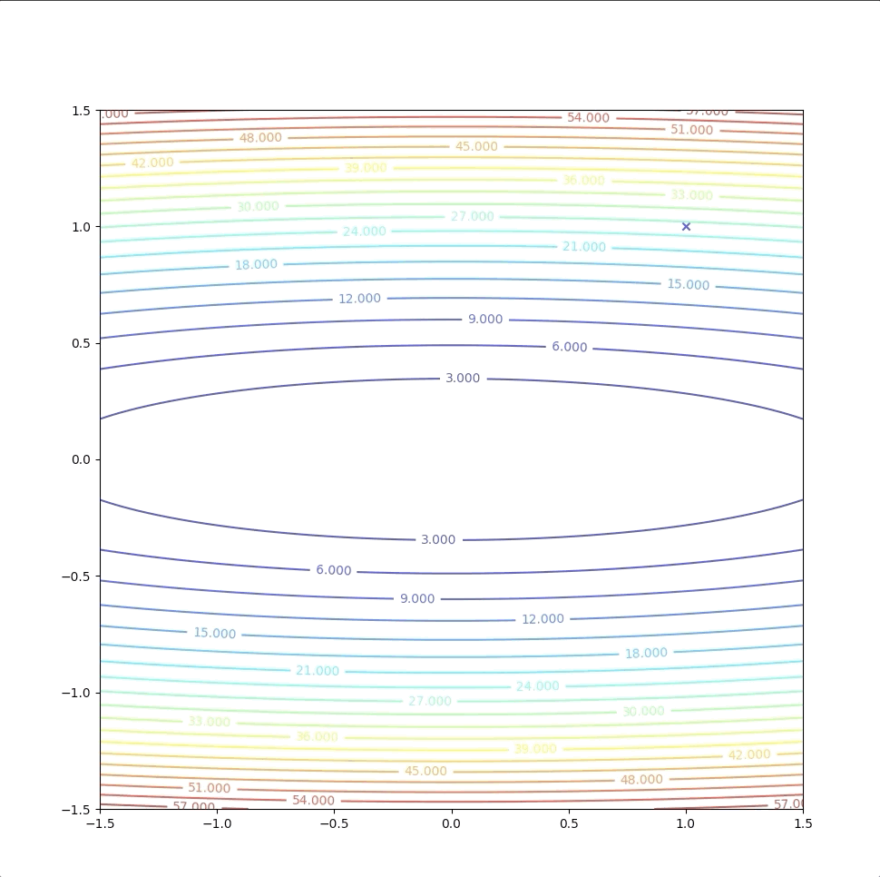
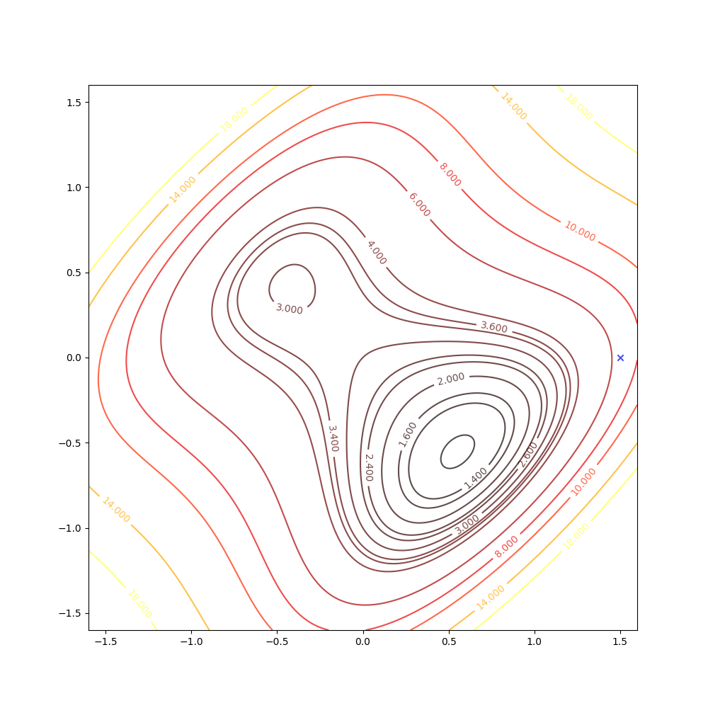
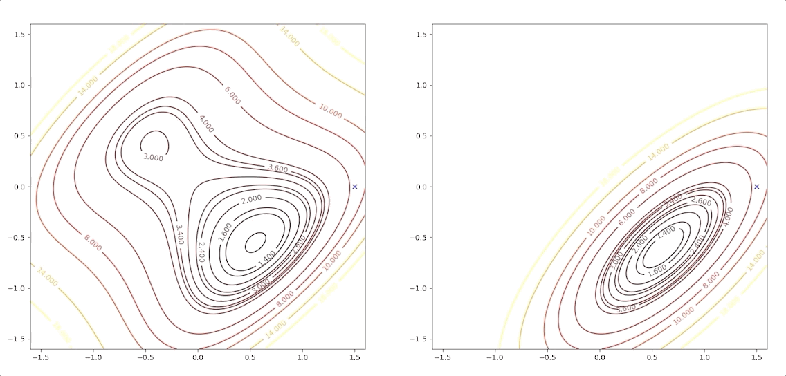

Newton's Method
Keywords: Newton’s method
Newton’s Method[1]
Taylor series gives us the conditions for minimum points base on both first-order items and the second-order item. And first-order item approximation of a performance index function produced a powerful algorithm in locating the minimum points in the whole parameter space which we call it ‘steepest descent algorithm’. Now we want to have an insight into the second-order approximation of a function to find out whether there is an algorithm can also work as a guider to the minimum points. The approximation of is:
The main principle of the Taylor approximation that can help us locate the minimum points is that the stationary point of the function is close to the stationary point of the approximation. So the closer approximation is to the function, the closer the stationary point of approximation is to the stationary point of the function. The gradient of equation(1) is a special form of a gradient of a quadratic function:
To get the stationary points, we set equation(2) equal to :
then as the iterative algorithm framework said, we update which is also known as Newton’s Method:
Now it is the time to look at an example:
the gradient of equation(5) is:
the Hessian matrix is:
then we update as equation(4) and with the intial point
Then we test with terminational condition. And then we stop this algorithm.

This one-step algorithm is not a coincidence. This method will always find the minimum of a quadratic function in 1 step. This is because the second-order approximation of the quadratic function is just itself in another form. So they have the same minimum and the stationary points of a quadratic function can be calculated analytically. However, when is not quadratic the method may:
- not generally converge in 1 step and
- be not sure whether the algorithm could converge or not which is dependent on both the function and the initial guess.
Let’s consider a function which is not qudratic:

There are a local minimum, a global minimum, and a saddle point.
With the initial point

Then we keep updating the position with the equation(4) and we have:

The right side of the figure is the process of second-order Taylor approximation.

if we initial the process at the point . It will be looked like:

The right side of the figure is the process of second-order Taylor approximation.

and it converges to the saddle point.
Newton’s method converges quickly in many applications. The analytic function can be accurately approximated by quadratic in a small neighborhood of a strong minimum. And Newton’s method can not distinguish local minimum, global minimum and saddle points because to a quadratic function it has only one global minimum. When we use a quadratic function approximation, we consider the quadratic function only and forget the other parts of the original function where it is not able to be approximated by the quadratic function away. So what we can see through a quadratic approximate is only a small region where there is only one minimum or saddle point. And so we can not distinguish which kind of stationary points it is. And Newton’s method can produce very unpredictable results, too.
If the initial point is of the example above, it is far from minimum but it finally converges to the minimum point

The right side of the figure is the process of second-order Taylor approximation.

while the intial point which is more close to the minimum converge to the saddle points.
Conclusion
Newton’s method is:
- faster than steepest descent
- quite complex
- possible oscillate or diverge (steepest descent is guaranteed to converge when the learning rate is suitable)
- and there is a variation of Newton’s method suited to neural networks.
- the computation and storage of the Hessian matrix and its inverse could easily exhaust our computational resource
- Newton’s method degenerates to steepest descent method when
References
Demuth, H.B., Beale, M.H., De Jess, O. and Hagan, M.T., 2014. Neural network design. Martin Hagan. ↩︎